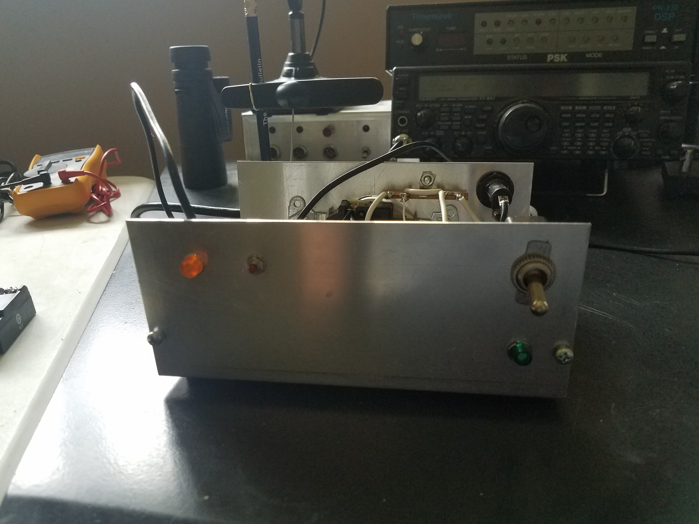
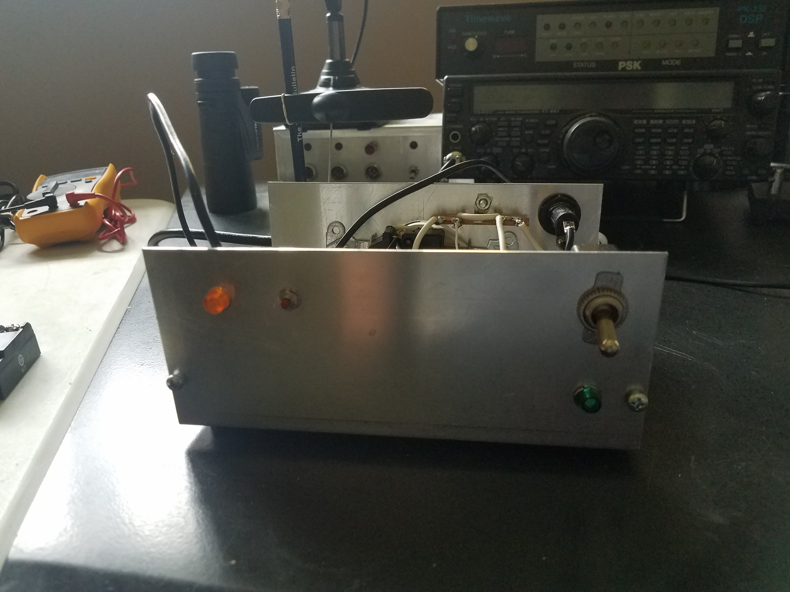

The purpose of the cell phone switch is to reset the power to the DSL internet modem and the wireless router from a remote location. The switch uses an eight channel relay board and a normally closed solid state relay, a MKR1400 arduino cell phone board and a Ting SIM. By making a cell phone call to the switch, the cell phone can tell the switch to turn on or off or check the status of the switch. The code is hosted in the github repository. The Link is below.

 
